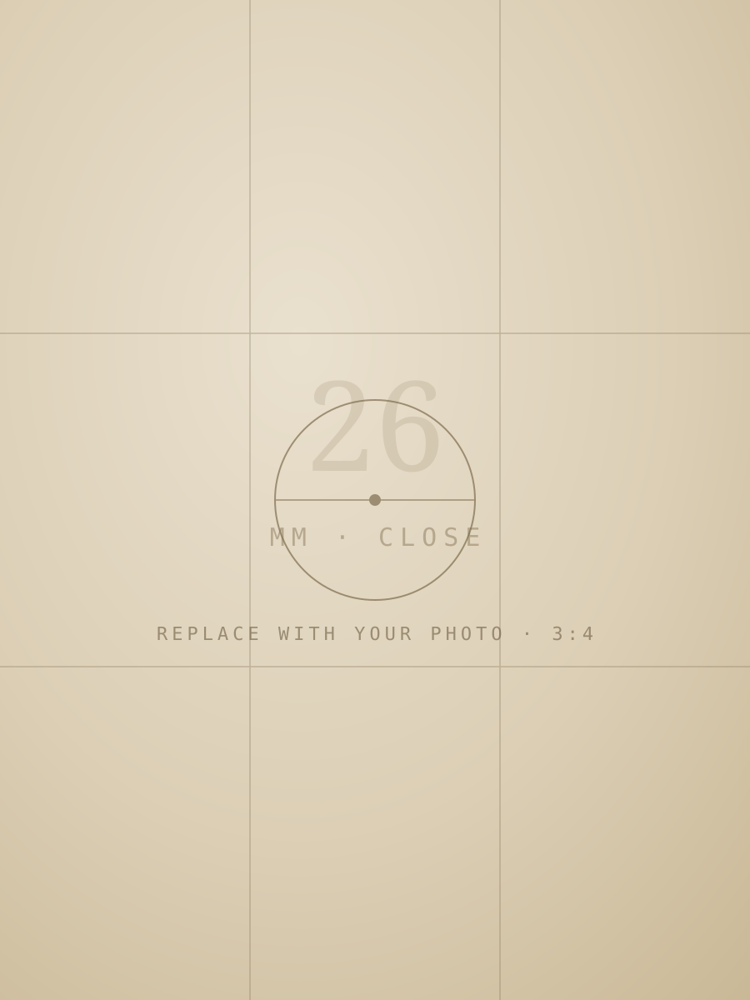
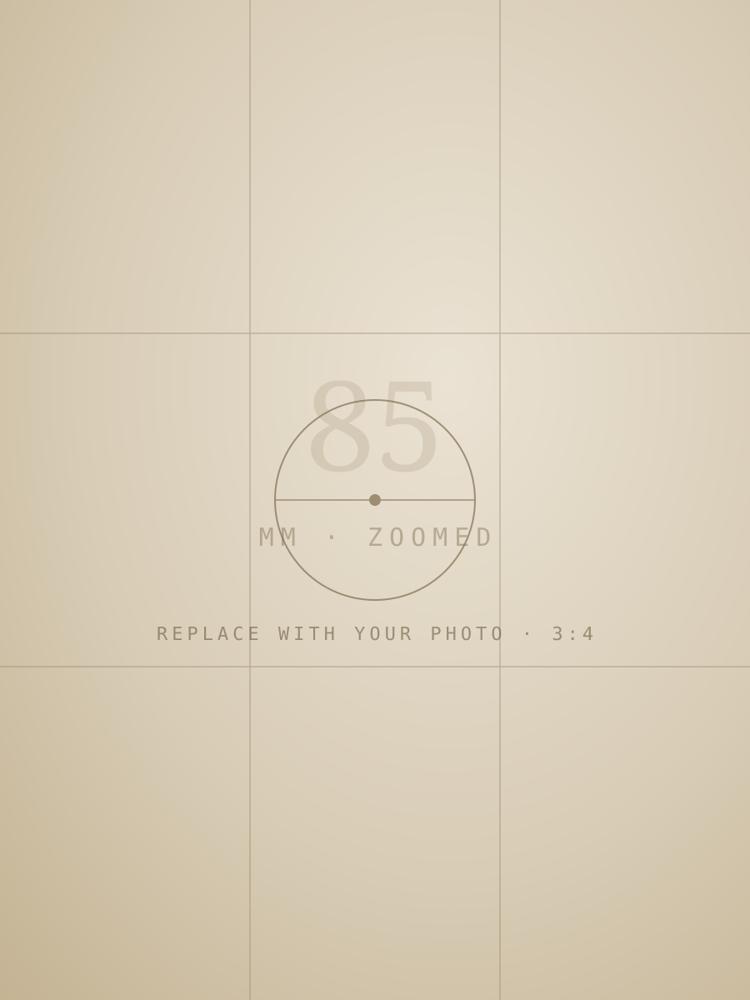
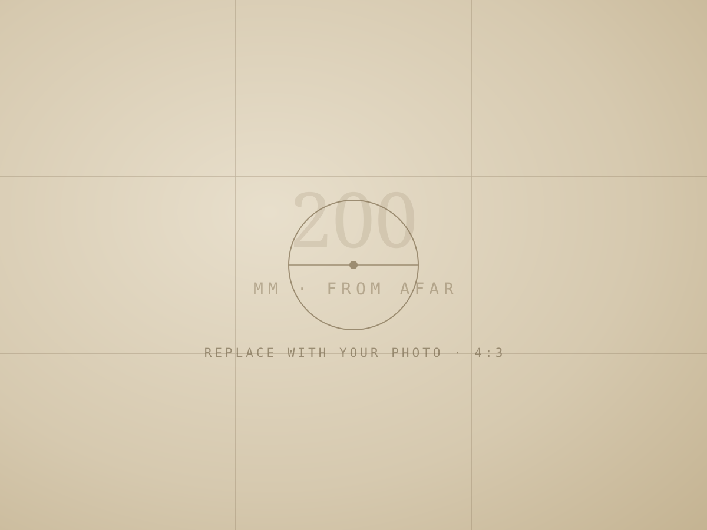
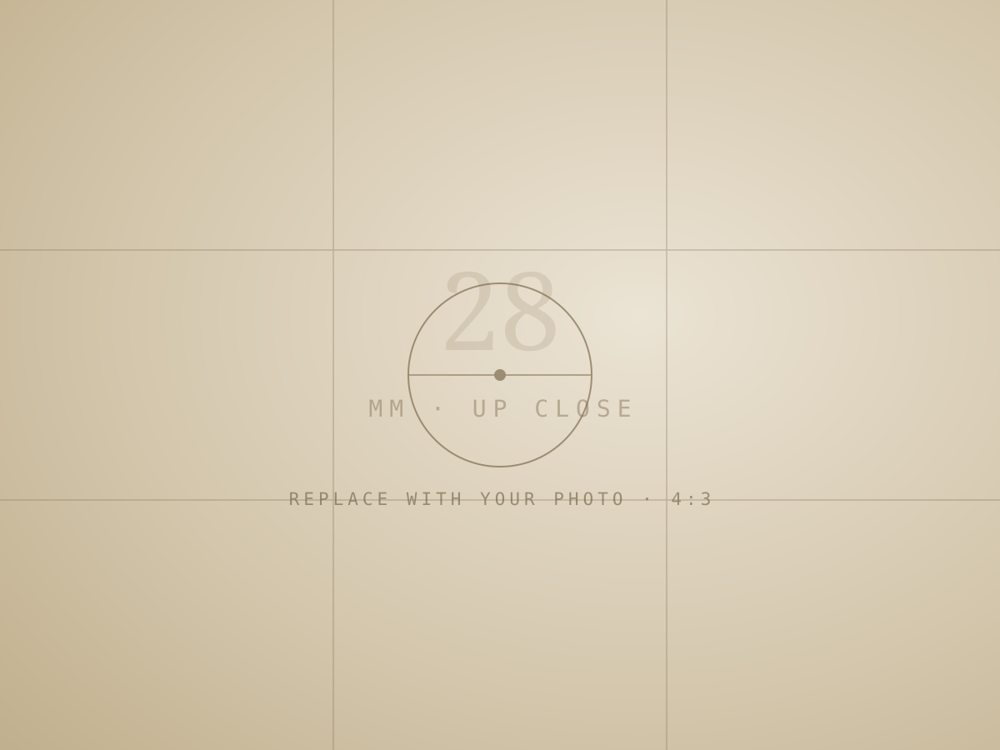
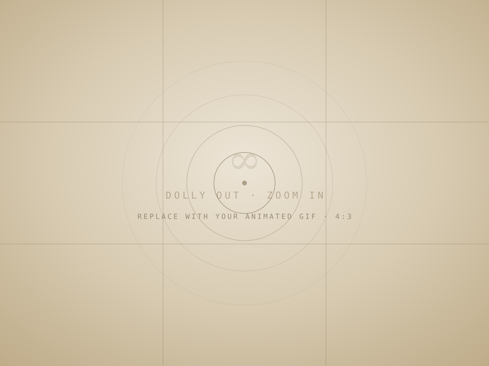

CS180 · Intro to Computer Vision & Computational Photography · Fall 2026
Becoming friends with my camera
Three small experiments in perspective — how focal length and where you stand reshape a photograph before you ever press the shutter.
The brief
Get comfortable with the camera before the real projects begin. Each part below pairs two photographs that differ in a single decision — the distance between camera and subject — and looks at what that one decision does to faces, to buildings, and to space itself.
Part 01 · Portrait distance
The selfie, two ways
Two portraits, one face, one framing. In the first, the camera sits an arm's length away. In the second, I stepped back several feet and zoomed in until the face filled the frame again.


Observations
Up close, the lens exaggerates whatever is nearest to it — usually the nose. [ Your explanation here: why does the stepped-back, zoomed-in portrait look better? What actually changed — the lens, or the distance? ]
Part 02 · Perspective compression
The long lens flattens
One building with a receding façade, photographed twice: from far away with the lens zoomed in, then from up close with no zoom — walking forward until the building takes up the same room in the frame.


Observations
In the telephoto view the façade looks flattened — planes that sit meters apart stack almost onto one another. [ Your explanation here: why does shooting from a distance compress depth, while standing close exaggerates it? ]
Part 03 · The vertigo effect
The dolly zoom
Hitchcock's trick. Dolly the camera backward while zooming in, holding the subject at a constant size — the subject stays still while the world stretches away behind them.
- 01Pick a scene with real depth behind the subject
- 02Step backward as you zoom in
- 03Keep the subject the same size in every frame
- 04Stitch 4–8 stills into an animated GIF

Observations
[ Your notes here: what did you photograph, how many frames did you use, and what surprised you about the effect? ]